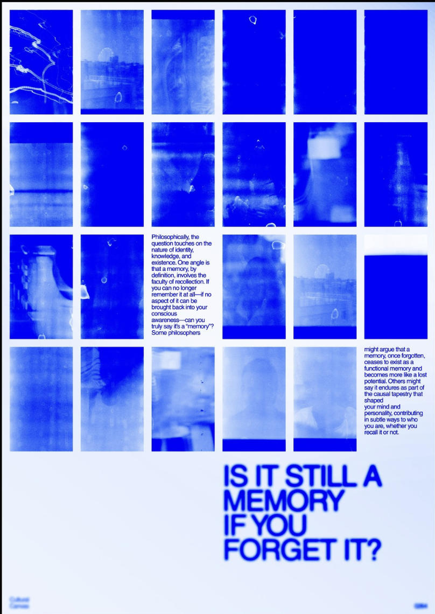
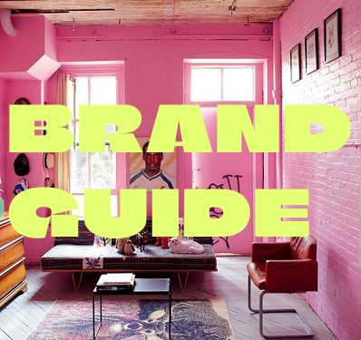
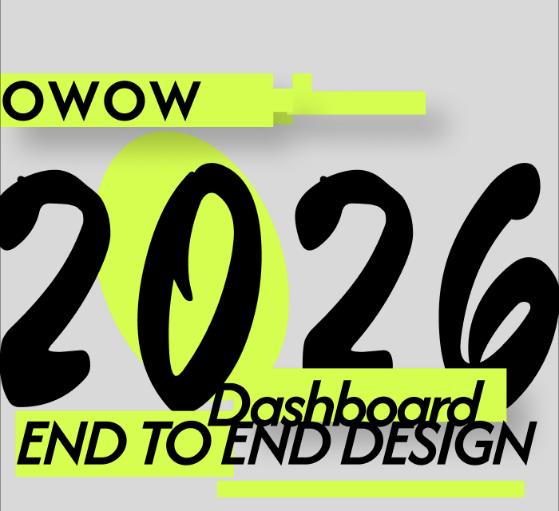
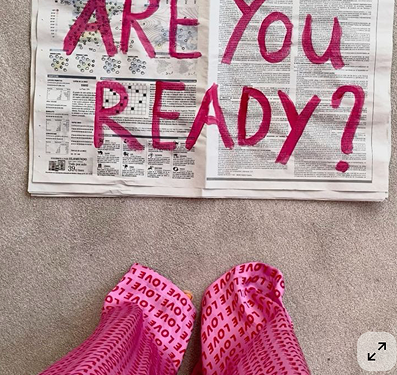
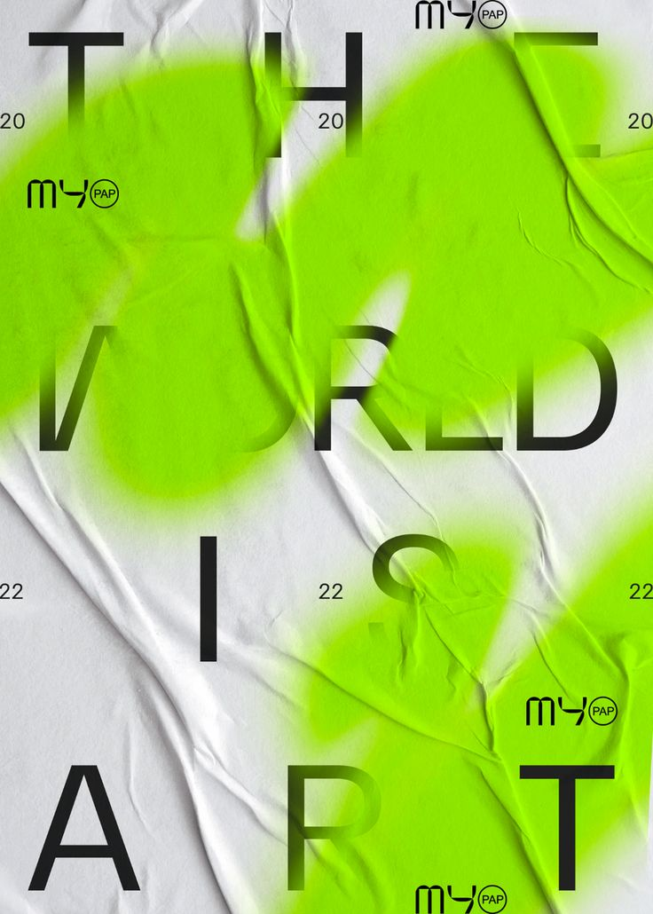
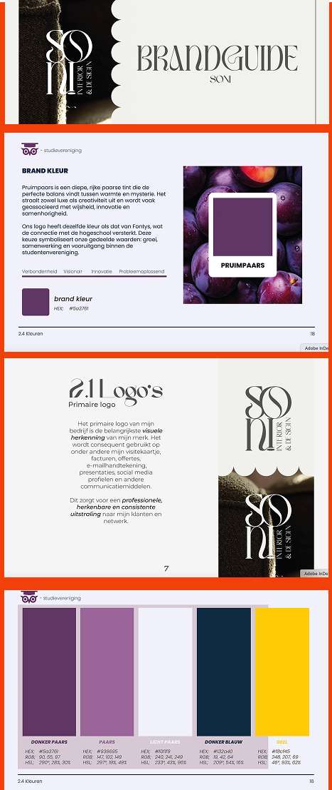

Sonya Khosravani
UX/UI Designer & Frontend Developer
gevestigd in:
Maastricht
Beschikbaar voor:
Stage
Navigatie:
About, Projects, Contact
Showcase portfolio 2026
Ik ben een creatieve ICT & Media Design student met een sterke drive om digitale ideeën tot leven te brengen. Ik beweeg moeiteloos tussen design en techniek, en vind mijn kracht in het vertalen van concepten naar slimme, stijlvolle en gebruiksvriendelijke ervaringen.
Of het nu gaat om branding, conceptontwikkeling of front-end development. Ik duik graag diep in het proces om iets te maken dat niet alleen goed oogt, maar ook echt werkt.
Op dit moment ben ik op zoek naar een stageplek waar ik mijn skills kan verdiepen, nieuwe inzichten kan opdoen en kan bijdragen aan creatieve digitale projecten die impact maken.


.01
.02

Met het ontwerpen van brandguides vind ik het vooral sterk om een idee van een merk om te zetten naar iets wat je echt kunt zien en voelen. Ik begin altijd met het begrijpen van het merk, de doelgroep en de wensen van de klant.
Van daaruit vertaal ik die input naar een visuele richting. Ik test verschillende stijlen en zoek naar de juiste balans, zodat alles samenkomt in één sterk geheel. Mijn kracht ligt in het verbinden van kleur, typografie en vorm, zodat het niet alleen mooi is, maar ook klopt als totaalbeeld.
Het geeft mij energie om een design stap voor stap compleet te maken en te zien hoe alles samenvalt in een en consistente brandguide.
Brandguide
Studievereniging Salve MundiBrandguide
Opstart bedrijf Soni